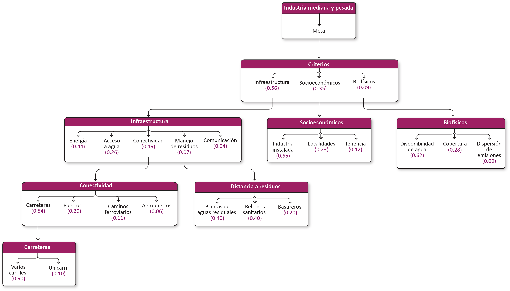

Industrial¶
Meta¶
Incrementar la productividad considerando los elementos de producción, las actividades e infraestructura de producción, almacenamiento y centro de distribución y de logística y comercialización de productos terminados. Disminuir el impacto ambiental: consumo de suelo y recursos, y generación de residuos.
Tipos de industria¶
Industria ligera¶
Industria ligera (tecnología y actividades de apoyo a la industria mediana y pesada: almacenamiento).
Industria mediana y pesada¶
Industria mediana y pesada (incluye agroindustria y manufactura como las principales).
Modelo AHP del tipo de industria mediana y pesada

Criterios¶
Infraestructura¶
| Criterio | Definición |
|---|---|
| Energía | Energía eléctrica: acceso y calidad/capacidad de infraestructura eléctrica (CENACE capacidad de carga en nodos). |
| Distacia a agua | Distancia a red de agua potable, plantas de tratamiento, cobertura. |
| Conectividad | Capacidad de hacer conexiones a centros de abastecimiento de mano de obra y distribución de productos. |
| Distancia a residuos | Manejo de residuos: distancia a sitios de disposición final (basureros, rellenos sanitarios, disposición de residuos peligrosos). |
| Comunicación | Telecomunicaciones: cobertura de red (IFETEL). |
Energía¶
Energía eléctrica: acceso y calidad/capacidad de infraestructura eléctrica (CENACE capacidad de carga en nodos).
Insumos
Conectividad¶
Capacidad de hacer conexiones a centros de abastecimiento de mano de obra y distribución de productos.
Insumos
| Capa | Distancia a carreteras |
|---|---|
| Fuente | [1] Conjunto de datos vectoriales de información topográfica por Entidad Federativa Serie VI. (localidad_250a) INEGI y [2] Red nacional de caminos INEGI |
| Año | 2019 |
| Escala | [1] 1:250,000; [2]Sin dato |
| Unidades | Kilómetros |
| Capa | Distancia a puertos |
|---|---|
| Fuente | Ubicación de los principales puertos de el estado de Yucatán POETY |
| Año | 2002 |
| Escala | Sin dato |
| Unidades | Kilómetros |
| Capa | Distancia a red ferroviaria |
|---|---|
| Fuente | Red ferroviaria INEGI |
| Año | 2012 |
| Escala | 1:50,000 |
| Unidades | Kilómetros |
Distancia a residuos¶
Manejo de residuos: distancia a sitios de disposición final (basureros, rellenos sanitarios, disposición de residuos peligrosos).
Insumos
Socioeconómicos¶
| Criterio | Definición |
|---|---|
| Industria instalada | Centros urbanos con predominancia de actividad industrial, corredores industriales, servicios anexos – talleres, bodegas (fuente: INEGI - DNUE) y proyectos industriales autorizados (fuente: MIA). |
| Localidades | |
| Tenencia | Tenencia de la tierra: terrenos ejidales o propiedad privada. |
Industria instalada¶
Centros urbanos con predominancia de actividad industrial, corredores industriales, servicios anexos – talleres, bodegas (fuente: INEGI - DNUE) y proyectos industriales autorizados (fuente: MIA).
Insumos
Localidades¶
Insumos
Biofísicos¶
| Criterio | Definición |
|---|---|
| Cobertura | Zonas urbanas, asentamientos humanos |
| Disponibilidad de agua | Disponibilidad de agua: factibilidad para el aprovechamiento directo- pozos: capacidad de extracción (distancia a manto freático) y calidad |
| Emisiones | Dispersión de emisiones: se cuenta con información de zonas con mayor dispersión de contaminantes al aire, con base en datos obtenidos en casetas de medición y de vulnerabilidad por movimiento de contaminantes en agua subterránea (fuente: Atlas de peligros de Yucatán) |